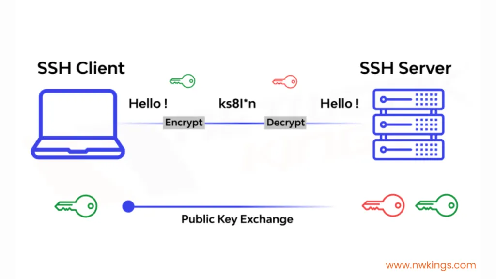

Connexió SSH
Una connexió SSH (Secure Shell) implica diversos passos, des de l'inici de la connexió fins a l'establiment d'un canal de comunicació segur. Aquests passos garanteixen la seguretat, autenticació i confidencialitat de les dades transmeses. Aquí tens un desglossament detallat dels passos d'una connexió SSH:

1. Inici de la connexió i Negociació de la Versió
Quan el client vol connectar-se a un servidor mitjançant SSH, primer s'inicia la connexió TCP al servidor, normalment al port 22 (per defecte, tot i que es pot configurar un altre port).
- Client envia un missatge amb la versió del protocol SSH que suporta.
- Servidor respon enviant la seva pròpia versió del protocol SSH.
Aquest intercanvi de versions permet al client i al servidor conèixer la versió de SSH que utilitzarà durant la sessió.
2. Negociació de Paràmetres de la Connexió
El client i el servidor negocien quins algorismes utilitzaran per establir la connexió segura. Això inclou:
- Algorisme d'intercanvi de claus (com Diffie-Hellman o ECDH).
- Algorismes de xifrat simètric (com AES o ChaCha20).
- Algorismes de HMAC (per verificar la integritat dels missatges, com HMAC-SHA2).
- Algorismes d'autenticació de la clau pública (com RSA, ED25519, etc.).
El client i el servidor escullen la millor combinació d'algorismes segons el que suporten, i la connexió procedirà amb aquests.
3. Intercanvi de Claus (Key Exchange)
Un cop s'han negociat els algorismes, comença el procés d'intercanvi de claus, que s'utilitza per generar una clau de sessió compartida.
- El client i el servidor fan servir l'algorisme d'intercanvi de claus (com Diffie-Hellman o Elliptic Curve Diffie-Hellman).
- Durant aquest procés, cap de les parts ha d'enviar la clau secreta directament. En lloc d'això, el client i el servidor utilitzen valors temporals per generar una clau simètrica comuna que s'utilitzarà per xifrar la resta de la comunicació.
4. Autenticació del Servidor
El servidor s'autentica davant del client per assegurar que el client s'està connectant al servidor correcte.
- El servidor envia la seva clau pública al client.
- El client comprova si aquesta clau pública és vàlida. Si ja s'ha connectat anteriorment al servidor, la clau s'hauria de trobar en el fitxer
known_hostsdel client. - Si és la primera vegada que el client es connecta al servidor, el client mostrarà un missatge per acceptar la clau del servidor.
Si la clau pública del servidor coincideix amb la que el client té registrada, el client confia en el servidor.
5. Autenticació del Client
Un cop el servidor ha estat autenticat, ara és el torn del client d'autenticar-se davant del servidor. Aquest pas pot fer-se de diverses maneres, les dues més comunes són:
- Autenticació per contrasenya: El client envia la seva contrasenya al servidor de manera xifrada. Si la contrasenya és correcta, la connexió s'estableix.
- Autenticació per clau pública: Si el client té configurades claus SSH, el servidor envia un repte al client, que el client ha de signar amb la seva clau privada. El servidor comprova la signatura amb la clau pública del client (que hauria d'estar ja registrada al servidor).
La segona opció és més segura, ja que no cal enviar una contrasenya per la xarxa.
6. Establiment del Canal Xifrat (Sessió Segura)
Un cop el client ha estat autenticat amb èxit, es genera una clau simètrica (obtinguda de l'intercanvi de claus anterior) que es farà servir per xifrar totes les dades que es transmetin durant la sessió.
Aquest xifrat protegeix la confidencialitat i la integritat de la comunicació entre el client i el servidor.
7. Intercanvi de Dades (Sessió Activa)
Ara que la connexió segura està establerta, el client i el servidor poden començar a enviar dades de forma segura.
- El client pot executar comandes en el servidor remot o transferir arxius.
- Tot el trànsit entre el client i el servidor està xifrat amb la clau de sessió simètrica.
Aquest és el moment en què es realitza l'objectiu principal de la connexió SSH, com ara iniciar una sessió de terminal, transferir arxius via SCP o SFTP, o establir un túnel de connexió segura (port forwarding).
8. Tancament de la Connexió
Un cop el client o el servidor decideix acabar la sessió, es tanca la connexió SSH.
- El client envia una sol·licitud per tancar la sessió.
- El servidor tanca la connexió, allibera els recursos, i amb això, finalitza la comunicació.
Resum dels passos:
- Inici de la connexió: El client i el servidor intercanvien les versions del protocol SSH.
- Negociació d'algorismes: Es decideixen quins xifrats, algorismes de HMAC i intercanvi de claus s'utilitzaran.
- Intercanvi de claus: El client i el servidor generen una clau de sessió segura mitjançant un algorisme com Diffie-Hellman.
- Autenticació del servidor: El client verifica la clau pública del servidor.
- Autenticació del client: El client s'autentica mitjançant contrasenya o clau pública.
- Establiment del canal xifrat: Es genera una clau simètrica per xifrar la comunicació.
- Intercanvi de dades: El client i el servidor intercanvien dades de manera segura i xifrada.
- Tancament de la connexió: El client o el servidor finalitzen la sessió segura.
Aquest procés assegura que la comunicació sigui segura, confidencial i que cap atacant pugui interceptar o modificar la informació transmesa entre el client i el servidor.